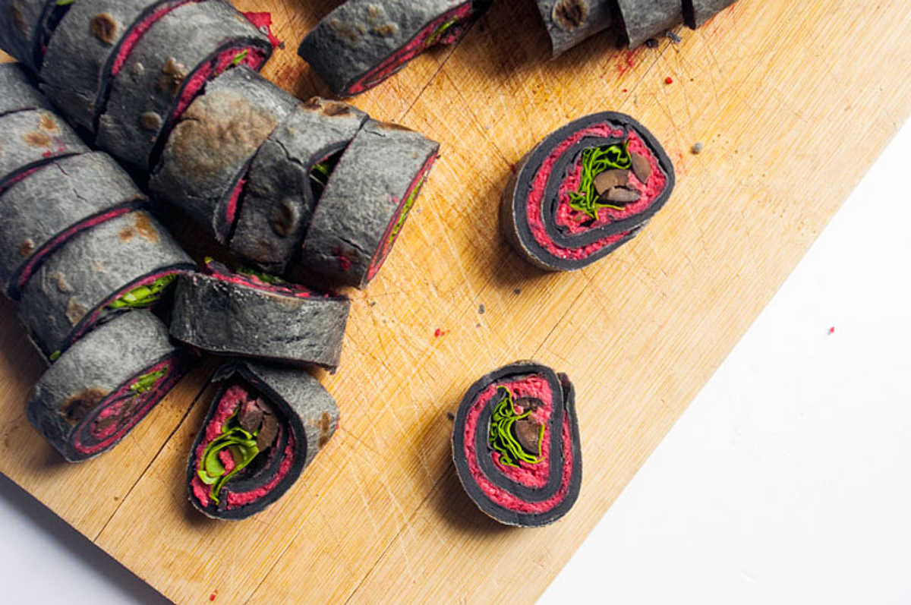

uzumaki hummus bites
11 tortillas — 50 minutes
Uzumaki means 'spiral' in Japanese, it is also the name of Rekka's favorite Junji Ito story. We thought this to be a good name for these savoury beet hummus bites.
Making tortillas at home is overall easy, but making perfect circles is a challenge and comes with practice. A tortilla press is only ever necessary if you care about the shape. I've gotten good results with a simple rolling pin.
Making the tortillas black is optional, but it adds a nice contrast to the beet hummus.
 red beets2
red beets2 chickpeas250g, cooked
chickpeas250g, cooked garlic2 cloves, minced
garlic2 cloves, minced tahini65 g
tahini65 g sea salt1.25 g
sea salt1.25 g balsamic vinegar15 ml
balsamic vinegar15 ml olive oil30 ml
olive oil30 ml
beet hummus
- Preheat oven to 190 °C (375 °F).
- Wash and cut 2 small red beets into 4, rub quarters lightly with olive oil.
- Roast for 30-40 minutes or until fork tender.
- Cook 125 g (3/4 cup) of dried chickpeas (see instructions), or use 1 can (15oz).
- Purée the roasted beets, with the cooked 250 g (1x400g can) chickpeas, 2 minced cloves of garlic, a 65 g (1/4 cup) of tahini, 1.25 g (1/4 tsp) of salt and 15 ml (1 tbsp) of balsamic vinegar. Mix in 30 ml (2 tbsp) of olive oil at the end. If the hummus feels too thick, add a few tbsp of water until you the desired consistency.
 all purpose flour360 g
all purpose flour360 g bamboo charcoal powder5 g
bamboo charcoal powder5 g- sea salt5 g
- olive oil60 ml
 water180 ml, cold
water180 ml, cold
tortillas
- Put 360 g (3 cups) of all purpose flour, 5 g (1 tsp) bamboo powder and 1.25 g (1/4tsp) of salt in a bowl. Mix well.
- Add 60 ml (1/4 cup) of olive oil and 180 ml (3/4 cup) of cold water.
- Knead into a smooth dough, and separate into 11 balls. Dust the balls lightly with flour, and let rest for 5 minutes.
- Roll the balls out into circles. Put the tortillas under a moist cloth until you're ready to cook them so they don't dry up (I usually spray a bit of water over the cloth).
- Heat a non-stick pan at medium heat, cook tortillas for 30 seconds on each side. Again, put the warmed tortillas under a cloth so they stay nice and moist.
 black olives150 g
black olives150 g arugulafew bunches
arugulafew bunches
filling
- Brush some beet hummus onto a tortilla, add ~150g (1 cup) of chopped black olives and some arugula overtop. Be sure to put the fillings near the edge to make it easier to roll.
- Roll the tortillas tightly and then slice into bite-sized bits.